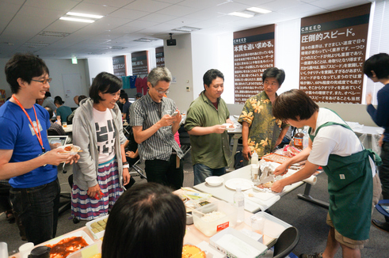
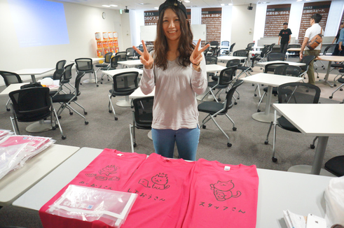

RegionalRubyKaigi レポート (56) TokyuRuby 会議 09
はじめに
TokyuRuby 会議 09 は、東京での RegionalRuby 会議として、2015 年 8 月 29 日に開催されました。本記事はその様子をレポートしたものです。
開催概要
- 開催日
- 2015-08-29 (土) 14:00 - 19:30
- 開催場所
- 株式会社 VOYAGE GROUP 様 会議室
- 主催
- Tokyu.rb
- 参加者
- 約 80 名
- 公式ページ
- http://regional.rubykaigi.org/tokyu09
- 公式ハッシュタグ
- #tqrk09
TokyuRuby 会議とは
TokyuRuby 会議は、Ruby に興味のあるエンジニアが集う Tokyu.rb が主催する LT 大会です。 第一回からの特徴として、「お酒・食べ物持ち込みあり」「その場で参加者から抽選で LT 発表者を選出する」「基調講演は当日の投票で選ぶ」などがあります。
会場の様子
受付
13:30 から受付を開始していますが、開始時刻までの 30 分の間でかなりの参加者がこられました。会場に到着した参加者のみなさまには、受付手続きを終えると、早速ビールスポンサーのサントリーさんから注ぎたてのプレモルが振る舞われました。今回は工場直送の ザ・プレミアムモルツ、マスターズドリーム、香るプレミアム、黒、となんと 4 つの樽を準備。さらにノンアルコールビールのオールフリー まで用意してくださりいたれりつくせりでした。

開会
開会は、実行委員長の @yukaina からの挨拶と、既にみんな飲んでましたが改めて乾杯！
スポンサー LT 前半とスタッフによる投票アプリ説明
ビールスポンサーのサントリーさんの LT は、プレモルセミナー TokyuRuby 会議バージョンです。希望された 4 人に前へ出てもらい、サントリー様のプレモルに利用されているこだわりの水と、水道水の飲み比べ。当たった方にも外れた方にもプレモルのグラスをプレゼントするサントリーさん太っ腹です！そして、恒例のキャンペーンのご案内 LT もありましたが、参加されたみなさまは、応募ハガキ、もちろん応募されましたよね？CVR1 を上げる大切さを再共有しました。
続いて、会場スポンサーの VOYAGE GROUP さんの会場ご案内 LT 。大きな銅鑼、飲食もできるステキな会場と、休憩の出来る和室、ソフトドリンクのご提供などなど、いつもありがとうございます。
また、スタッフの @yukao24hours より LT 王と飯王の投票アプリの説明。今回は Web からの投票アプリがリニューアルしてパワーアップしました！
前半戦 LT
ライトニングトーク前半戦です！
| 登壇者 | タイトル |
|---|---|
| @yasulab | 技術ドキュメントの翻訳を自動化することはできるのか? |
| 上杉隆史 | 「Ruby On Railsで複数の cache を使って若干パフォーマンスを上げる」 |
| 伊藤 浩一 (@koic) | Java から Ruby への変遷を約 10 年見てきて、プロジェクトで変わったこと、変わっていないこと 12 集 |
| takai | Netflix の microservices スタックで Ruby アプリケーションを動かしてみる |
| 川村 徹 (@tkawa) | JSON API について（仮） |
| k0kubun | Ruby を使った開発環境構築の自動化 |
| 小林由憲 | Rails と Instagram Ruby Gem を使って作る世界遺産検索サイト |
| rosylilly | Ruby によく似た言語、 Crystal のご提案 |
| willnet | ビールビー活動報告 |
LT 内容については印象に残ったものをダイジェストで紹介します。
上杉隆史さんによる元祖フリマアプリの Fril で使われているキャッシュを使った Rails の高速化の話。hash→json 変換が時間がかかるので json をキャッシュしたいというニーズを満たすために、 Rails.cache 経由で利用できる multi_cache-rails gem を自作して 15% の高速化に成功したと堂々の発表でした。
@k0kubun さんは mac のカスタマイズができる karabiner の設定を RubyDSL で書ける gem を公開。その理由は自分の mac がオレオレ設定をし尽くしていてペア作業相手から苦情が来たからというたいへん理にかなったモチベーションからでした。
技術的な話もありつつ、一方でビールビー活動報告と日頃の研究成果発表もあり、多様な発表内容になりました。
抽選 LT
みなさんの協力による迅速な進行と酔っ払い効果による早口化のおかげで予定より 25 分早く前半戦が終了。前半戦が終わると TokyuRuby 会議ではおなじみの抽選 LT。(参加者の中から抽選で選ばれる LT で、全員に発表のチャンスがあります！) 今回は 5 人の方を抽選で選んで発表していただきました。抽選プログラムは前回LT王でスタッフの @publichtml さん作で、猫の写真が大変けしからん素敵なアプリでした。この抽選 LT は、休憩時間の間に用意していただくのですが、短時間にもかかわらず、内容の濃い LT が繰り広げられました。
また、この休憩時間の間に、ビールスポンサーであるサントリーさんが帰られるということで、みんなでプレモルラストスパートに勤しみました。
スポンサー LT
| 登壇者 | タイトル |
|---|---|
| Tシャツスポンサー Spice Life様 | TMIXと”(( ⁰⊖⁰)/)”のこと |
| esaスポンサー esa LLC様 | (( ⁰⊖⁰)/) のこと |
後半戦の最初はスポンサー 2 社による LT。spicelife社 の オリジナルTシャツプリントサービスTMIX と esa LLC 社さんによる 情報共有ツール esa.io をお互いに紹介しあうというコラボ LT 連弾。spicelife では esa を最も利用している会社であり日報勤務時間を月集計するユーティリティ Nippos を作成しています。esa さんはサービス正式公開前にグッズを作成販売しており、そこで TMIX を利用していると発表、新作グッズの発表もありました。
後半戦 LT
| 登壇者 | タイトル |
|---|---|
| 馬場一樹(@kbaba1001) | Trailblazer Rails のアーキテクチャを考える |
| いろ | オープンソースとアカデミアとコミュニティ原理主義 |
| joker1007 | 口に出すと燃えそうな技術的なんたらについて酔っ払いが上から目線で話す 5 分間 |
| dameninngenn | 第一回 チキチキ 独断と偏見と狭い観測範囲の中から選ぶコミットログ選手権 |
| @izumin5210 | 俺達の俺達による俺達のための IoT |
| onk | bootstrap applications 〜bin/setup を使う世界〜 |
| 河野 朋子 | Rails Madam がねこてちょうを作ったら |
| 安田篤史 | テーブル定義書の更新って再考の仕事ですよね！ |
| fukayatsu | esa のなにか |
| yasaichi | Rails のエラーページ運用について本気出して考えてみた |
| 小野寺類 | Ruby と MySQL を使ったアクセス分析基盤のリプレースに少しだけ関わったお話 |
| 平田 智子 | 「CoEdo.rb の紹介」 |
| nekova | Elixir for Rubyist |
サントリーさんからのプレモルの提供も終わり、みんなの酔いも有頂天！休憩も終わり、後半戦です。
印象深かったのは @joker1007 さんによる技術的負債に対する魂の叫びで、会場は共感と笑いに包まれました。みんなの酔いも高まるも技術的なプレゼンも多く、 @yasaichi さんは Rails のエラーページを assets に載せる苦労を自作 gem gakubuchi で解決した話や @onk さんの気合いの入った自作プレゼンツールによる発表、ほかの発表内容も SQL や Elixir など多数あり、酔ってないときに聞きたいという声もあがりました。みなさんが翌日まで覚えていることを祈るばかりです。
Accept LT
Accept LT は、TokyuRuby 会議名物の一つです。勢い余って前倒しになった時間を使い、その場で LT 登壇者を募って行う LT です。突然にも関わらず 19 名の方にご登壇いただきました。本当にありがとうございました。
ごはんと飯王 基調 LT
TokyuRubyKaigi ではみんなの手作りのごはんを持ち寄ってみんなで食べます。私は冷や汁をおいしくいただきました！特に飯王常連の @2celeb さんが料理を持ち込むと行列ができました。また、お酒もみんなで持ち寄っておいしくいただきました。
今回の飯王は @2celeb さんが飯王に返り咲き、地力を見せつけました。基調 LT では最近読んだ料理書について語るなど、深い造詣が伺える基調 LT でした。 
LT 王 基調 LT
LT 王は会場を爆笑させた @dameninngenn さん。「第一回 チキチキ 独断と偏見と狭い観測範囲の中から選ぶコミットログ選手権」というタイトルで「餃 子 の 王 将」など、驚愕のコミットメッセージを紹介し喝采を浴びました。初参加での見事な LT 王獲得でした

スタッフ T シャツ
TokyuRubyKaigi06 から引き続き、今回もスタッフの @yucao24hours がデザインしました。そして、T シャツの提供は、カスタマイズ T シャツプリントサービス TMIX でした！ 
TokyuRuby 会議実行委員長システム
お馴染みの実行委員長 @ginkouno に替わり、今回は @yukaina が実行委員長を務めました。実行委員長の負荷分散を着々と進め持続可能なTokyuRubyKaigi を運営しています。
まとめ
TokyuRuby 会議 09 は、開始時間がまた午後からに変更になり、昔の TokyuRuby 会議の雰囲気になりました。雰囲気は同じでも初参加の方もいらっしゃり、 @dameninngenn さんが初参加にして LT 王をもぎ取りながらも、飯王は過去最多飯王を誇る @2celeb さんが獲得するなど、新規と常連の参加者さんどちらも楽しい時間を過ごしたのではないかと思います。
また、今回の投票アプリにより Web から料理や LT をした人へ気軽にフィードバックすることが可能になりました。この素晴らしい体験は、新しいTokyu の名物になっていくのではと思いました。
最後に、発表者のみなさま、ビールスポンサーのサントリーさま、会場をご提供いただいた VOYAGE GROUP さま、スタッフ T シャツスポンサーの spice life さま、esa スポンサーの esa LLC さま、飯、酒を持ち寄ってくださったみなさま、参加者のみなさまありがとうございました。
Tokyu.rb とは
2 ヶ月に 1 度位、目黒でしゃぶしゃぶかすきやきを食べる Rubyist の集団。
お酒持ち込みのハッカソンも開催予定。 東急沿線でなくとも乗り入れ線沿線や、職場が沿線だったりする方も、全く関係が無い方も誰でも参加可能です。お気軽にお越しください。
https://www.facebook.com/groups/928069233888488/
当レポートは、 @igaiga555 撮影の写真を使ってます。
https://www.flickr.com/photos/igaiga/albums/72157658813489091
他にもたくさんの TokyuRuby 会議 09 の写真が掲載されています。よろしかったらご覧下さい。
※公開に問題があるようでしたらご連絡下さい。
著者について
五十嵐 邦明 (@igaiga555)
 TokyuRuby 会議 09 撮影&レポート係。
TokyuRuby 会議 09 撮影&レポート係。
株式会社spice life CTO。 自作のTシャツが作れるサービスTMIX を開発しています。全国の Ruby イベントのスタッフ T シャツを TMIX でスポンサーすべくく活動しています。
-
ウェブサイトへのアクセス数、またはユニークユーザーのうち、何割がコンバージョンに至るかの割合を示す指標 ↩